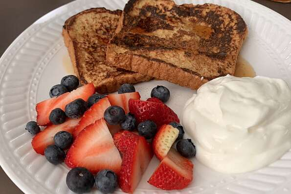

French Toast

Description
Fluffy version of the traditional french toast
Ingredients:
- ¼ cup all-purpose flour
- 1 cup milk
- 1 pinch salt
- 3 eggs
- ½ teaspoon ground cinnamon
- 1 teaspoon vanilla extract
- 1 tablespoon white sugar
- 12 thick slices bread
Steps:
- Measure flour into a large mixing bowl. Slowly whisk in the milk. Whisk in the salt, eggs, cinnamon, vanilla extract and sugar until smooth.
- Heat a lightly oiled griddle or frying pan over medium heat.
- Soak bread slices in mixture until saturated. Cook bread on each side until golden brown. Serve hot.
Nutrition Facts:
Per Serving 123 calories; protein 4.8g; carbohydrates 19.4g; fat 2.7g; cholesterol 48.1mg; sodium 230.2mg